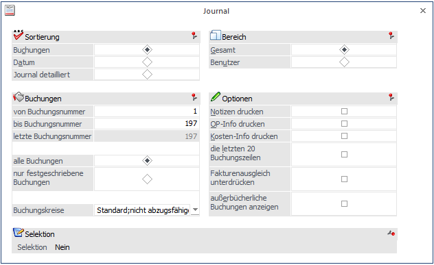
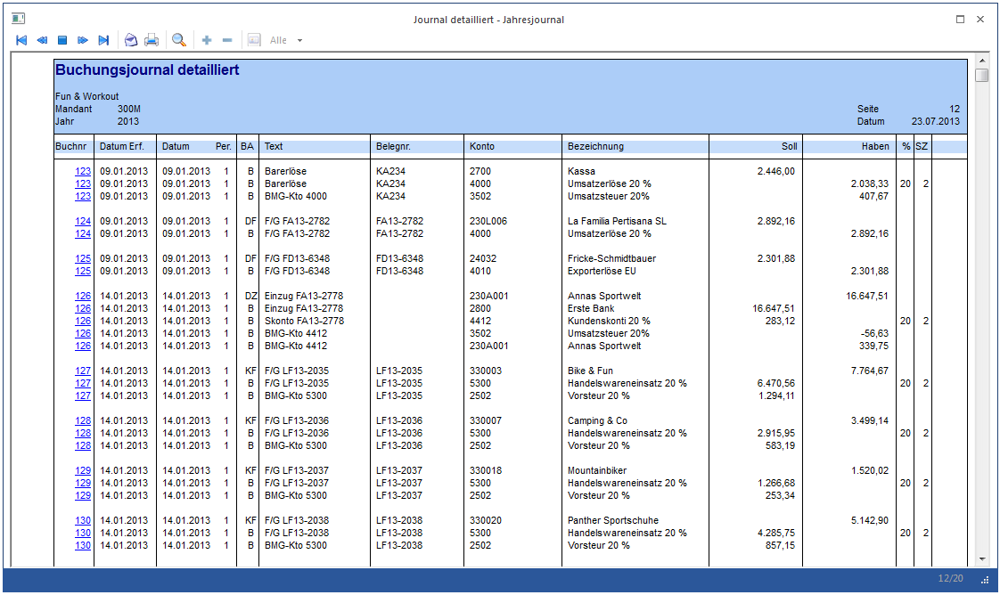
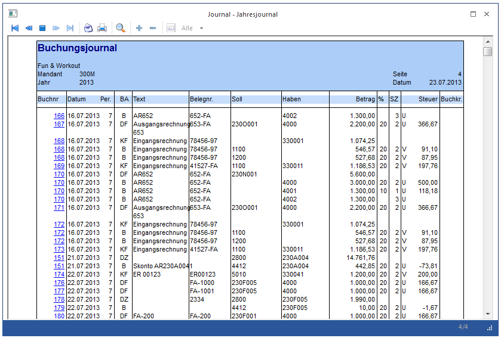
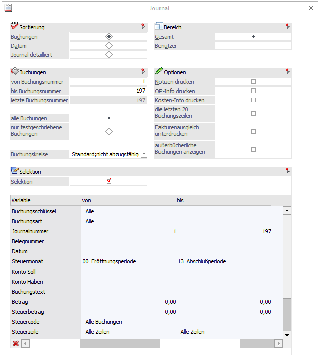
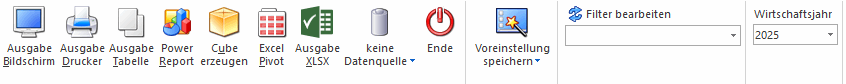
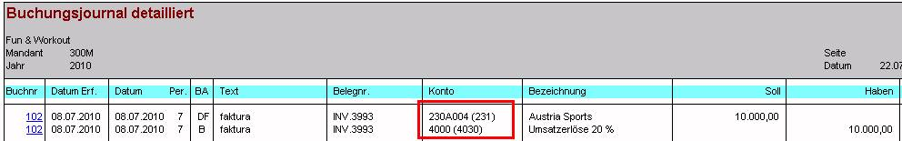

Im Menüpunkt
1 Auswertungen
1 Journal
oder Schnellaufruf
1 STRG + J
können Buchungsjournale nach folgenden Selektionen abgerufen werden:

Sortierung
Ø Buchungen
Ausgabe nach Prima Nota-Nummer sortiert.
Ø Datum
Ausgabe nach Datum sortiert. Bei Auswahl dieser Option gibt es zwei zusätzliche Eingabefelder, in denen das Journal nach Datum eingeschränkt werden kann.
Ø Journal detailliert
Pro Prima Nota-Nummer wird für alle angesprochenen Konten eine eigene Buchungszeile angedruckt. Die Buchungsbeträge werden in eigenen Soll- und Habenspalten dargestellt. Handelt es sich um zusammengesetzte Buchungssätze in denen auch Steuerkonten vorkommen, wird eine eigene Buchungszeile für das Steuerkonto angedruckt.

Buchungen
Ø Buchungsnummer von - bis
Die Auswertung kann auf bestimmte Buchungsnummern eingeschränkt werden.
Zur Info wird die letzte vorhandene Buchungsnummer angezeigt.
Ø Alle Buchungen
Alle Buchungen werden (gemäß den sonstigen getroffenen Eingrenzungen) ausgegeben, d.h. wenn in den FIBU-Parametern (WinLine START/Optionen) eingestellt wurde, dass Buchungen - bis zum Zeitpunkt, an dem sie festgeschrieben werden - noch als Stapel geladen und editiert werden können, dann stehen bei dieser Option ALLE Buchungen (die bereits festgeschriebenen UND die noch vorläufigen Buchungen) für die Ausgabe zur Verfügung.
Ø Nur festgeschriebene Buchungen
Bei dieser Einstellung werden nur DIE Buchungen ausgegeben, die bereits im Menüpunkt
1 Buchen
1 Buchen
1 Buchungen festschreiben
als "definitiv" gekennzeichnet worden sind.
Ø Buchungskreise
Im Journal kann auf Buchungskreise eingeschränkt werden. In der Auswahllistbox werden nur jene Buchungskreise angezeigt, für die der Benutzer die Berechtigung hat. Auf dem Journal wird in der letzten Spalte "Buchkr." die 3-stellige Kurzbezeichnung des Buchungskreises angedruckt.
Die Auswahllistbox ist nur aktiv, wenn die entsprechende Lizenz vorhanden ist.
Bereich
Wählen Sie aus, ob nur ein benutzerspezifisches Journal (nur die Buchungssätze werden angezeigt, die der aktuelle User eingegeben hat) oder ein Gesamtjournal (über alle Benutzer) ausgegeben werden soll.
Optionen
Ø Notizen drucken
Durch Aktivieren dieser Checkbox werden die in der Buchungszeile mit der Notizblock-Funktion (F8-Taste im Textfeld oder Notizen-Button) erfassten Notizen im Journal mit angedruckt.
Ø OP-Info drucken
Zu jeder FIBU-Zeile wird auch die Information der Offenen Posten-Verwaltung mit ausgegeben

Ø Kosten-Info drucken
Zu jeder FIBU-Journalzeile wird angezeigt, wie der Betrag in der KORE zugeordnet worden ist
Ø Die letzten 20 Buchungszeilen
Nach Aktivieren der Checkbox werden im Journal nur die letzten 20 Buchungszeilen angedruckt.
Ø Fakturenausgleich unterdrücken
Im Zuge des manuellen und automatischen Fakturenausgleichs (Ausziffern von Gutschriften und Fakturen - sowohl im Personenkonten- als auch im Sachkonten-OP-Bereich) werden sogenannte "Fakturenausgleichsbuchungen" zu Dokumentationszwecken erstellt (siehe Kapitel "Fakturenausgleich"). Da diese Buchungszeilen ausschließlich informativen Charakter haben, können diese Zeilen durch Aktivieren dieser Option für die Ausgabe unterdrückt werden.
Ø außerbücherliche Buchungen anzeigen
Nach Aktivieren der Checkbox werden im Journal auch die außerbücherlichen Buchungen (Buchungen mit einer Steuerzeile "Pagatorische Aufwände/Erlöse" aktiv) mit ausgegeben. Die außerbücherlichen Journalzeilen werden andersfarbig (gelb) dargestellt und in der letzten Spalte "Buchkr." mit einem # markiert.
Selektion
Ø Selektion
In der WinLine haben Sie die Möglichkeit, die Ausgabe nach einer Vielzahl von Kriterien einzuschränken. Wenn die Option aktiviert wird, steht eine Reihe von zusätzlichen Optionen zur Verfügung, wobei diese in einer Tabelle dargestellt werden:

Wird bei der Buchungsart, bei der Steuerzeile, beim Steuersatz, beim FW-Betrag, beim User, beim Konto Soll/Haben, bei der Journalnummer, bei der Belegnummer kein bis Kriterium eingetragen, gilt der Von-Wert als "AB-WERT".
Buttons

Ø Ausgabe Bildschirm / Ausgabe Drucker
Es kann gewählt werden, ob die Ausgabe am Bildschirm oder am Drucker durchgeführt werden soll. Standardmäßig wird die Ausgabe auf Bildschirm vorgeschlagen, die auch durch Drücken der F5-Taste gestartet werden kann.
Ø Ausgabe Tabelle
Über den Button "Ausgabe Tabelle" wird die Tabellenanzeige geöffnet. Weitere Details entnehmen Sie bitte dem Kapitel Buchungen.
Ø Power Report
Durch Drücken des Buttons "Power Report" wird die Auswertung auf Basis von Cube-Daten grafisch dargestellt. Die Ausgabe ist individuell anpassbar und erfolgt in der Form von "Widgets", die unterschiedlichsten Darstellungen ermöglichen.
Ø Cube erzeugen
Wenn die Option "Cube erzeugen" gewählt wird (nur möglich, wenn auch die entsprechende Lizenz dafür vorhanden ist), dann wird die Offene Posten - Auswertung im "Olap Viewer" angezeigt. In diesem können die Daten nach verschiedenen Gesichtspunkten ausgewertet werden.
Ø Excel Pivot
Durch Anwahl des Buttons "Excel Pivot" werden die selektierten Zeilen in Form einer Pivot Ausgabe in Microsoft Excel (2007 oder höher) angezeigt
Ø Ausgabe XLSX
Mit Hilfe des Buttons "Ausgabe XLSX" wird die Auswertung mit den von Ihnen definierten Selektionen an Microsoft Excel übergeben.
Ø Datenquelle
Mit Hilfe dieser Auswahl kann definiert werden, ob und wie eine Datenquelle (d.h. ein Snapshot oder eine MasterView) verwendet werden soll.
ü Keine Datenquelle
Bei Auswahl
von "keine Datenquelle" wird keine zuvor angelegte Datenquelle genutzt. D.h. die
Daten werden von der WinLine "live" ermittelt und in der gewünschten Form
ausgegeben.
Hinweis
Da die BI-Ausgabe (z.B. Cube oder Power Report) immer eine Datenquelle benötigt, wird im Hintergrund eine temporäre Datenquelle (Snapshot) gebildet.
ü Datenquelle
erstellen/aktualisieren
Die Daten werden zur Laufzeit ermittelt und an einen
zu definierenden Snapshot übergeben. Nach dem Füllen der Datenquelle wird die
gewünschte Ausgabevariante über die Datenquelle erzeugt. Dieser Vorgang kann mit
einer Zeitverzögerung verbunden sein, da die Daten zusätzlich gespeichert werden
müssen.
ü Datenquelle verwenden
Bei der
Verwendung eines Snapshots werden die Daten direkt aus der Datenquelle gelesen,
d.h. die für die Ausgabe benötigten Daten können ohne Verzögerung in der
gewünschten Variante ausgegeben werden.
Wird hingegen eine MasterView
gewählt, so werden die Daten für die Ausgabe "live" ermittelt, wobei diese so
aktuell sind wie die zugrunde liegenden Datenquellen.
Hinweis
Der Button "Datenquelle verwenden" wird nur angeboten, wenn für diesen Bereich (bezogen auf den aktuellen Benutzer / Mandanten) zumindest eine private oder öffentliche Datenquelle existiert.
Hinweis
Weitere Informationen zum Thema "Datenquellen" entnehmen Sie bitte dem Kapitel "Die Datenquelle".
Ø Ende
Durch Drücken des Buttons "Ende" bzw. der Taste ESC wird das Fenster geschlossen.
Ø Voreinstellung speichern
Durch Anwahl dieses Buttons erfolgt eine benutzerspezifische Speicherung aller im Fenster getätigten Einstellungen. Diese sogenannten "Voreinstellungen" können jederzeit wieder abgerufen werden und ermöglichen dadurch ein schnelleres und zielorientierteres Arbeiten (nähere Informationen entnehmen Sie bitte dem Kapitel "Die Voreinstellungen").
Ø Filter bearbeiten
Durch Anklicken des Buttons "Filter bearbeiten" kann die Auswertung nach frei definierbaren Kriterien eingeschränkt werden.
Ø Wirtschaftsjahr
Hier kann auf das gewünschte Wirtschaftsjahr eingestellt werden. Standardmäßig wird das aktuelle WJ angezeigt, bzw. jenes, in dem man sich derzeit befindet.
Hinweis 1
Im Buchungsjournal gibt es auch die Möglichkeit, sich die Herkunft der Buchungen (mit welchem Buchungsprogramm wurden die Buchungen erstellt) anzeigen zu lassen. Dazu steht im Formular die Variable 28/40 zur Verfügung.
Folgende Codes werden vom Programm vergeben (die Herkunft setzt sich aus der Applikation und der Fensternummer zusammen, z.B. 2 = FAKT und das Fenster 349 ist "Lager buchen"):
ü 1031 - Dialog-Stapel-Buchen
ü 1071 - Eingangsrechnungen buchen
ü 1072 - Ausgangsrechnungen buchen
ü 1073 - Zahlungsmittelkonten buchen
ü 1095 - Splitbuchung
ü 1035 - Buchungsstorno
ü 1282 - Buchungen bearbeiten
ü 1036 - ASCII-Stapel-Buchen
ü 1062 - Eröffnungsbuchungen
ü 1037 - Zahlungsverkehr
ü 1140 - Sofortzahlung
ü 1031 - Zahlungsausgleich
ü 1049 - Fakturenausgleich manuell
ü 1048 - Fakturenausgleich automatisch
ü 1303 - Sachkonten-OP-Ausgleich
ü 2247 - Belegerfassung
ü 2232 - Lagerbuchungen in FAKT-Stapel
ü 2349 - Lager buchen
ü 2356 - Zahlung beim Belegerfassen
ü 6000 - Buchungsstapel aus der ANBU
ü 3041 - Buchungsstapel aus dem LOHN
ü 18041 - Buchungsstapel aus dem LOHD
Hinweis 2
Im Buchungsjournal gibt es auch die Möglichkeit, sich das Abschreibungsverfahren steuerrechtlich oder handelsrechtlich der Periodenabschreibungs- und Abschreibungsbuchungen aus der ANBU (welche Perioden-/Jahresabschreibung wurde von der ANBU in die FIBU übergeben und verbucht?) anzeigen zu lassen. Dazu steht im Formular die Variable 28/62 zur Verfügung.
Diese Variable 28/62 Steuer-/Handelsrecht steht ebenfalls im Filter für die Selektion der entsprechenden Buchungen zur Verfügung. Die Werte im Filter werden mit Steuerrecht = S und Handelsrecht = H definiert.
Hinweis 3
Im Journal und Journal detailliert wird für jedes Nebenbuchkonto in Klammern die Hauptbuchkontonummer angedruckt.

Dafür stehen im Standardformular P01W52 Variabel "0,116 Konto Soll mit Hauptbuchkontonummer" und "0,117 Konto Haben mit Hauptbuchkontonummer" und im Standardformular P01W523 Variabel "0,188 Konto mit Hauptbuchkontonummer" zur Verfügung.